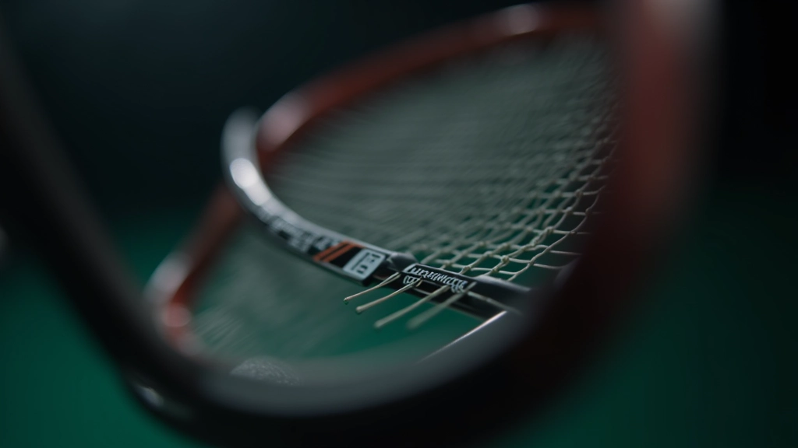
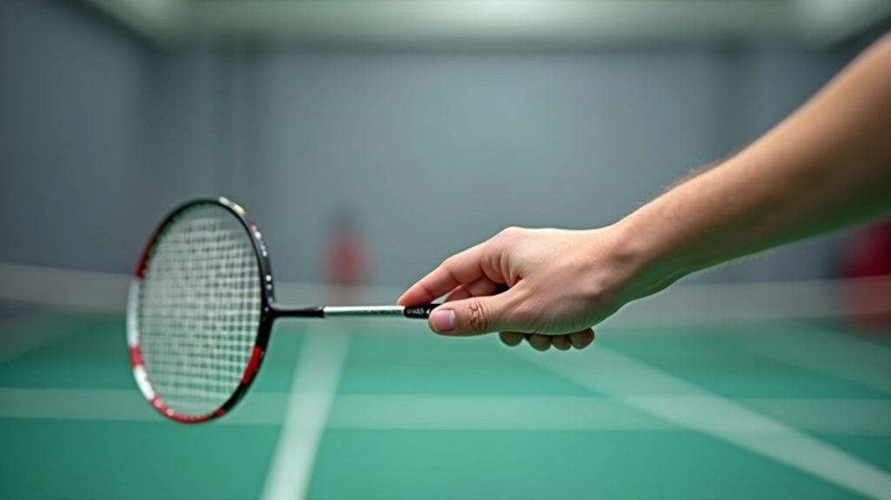
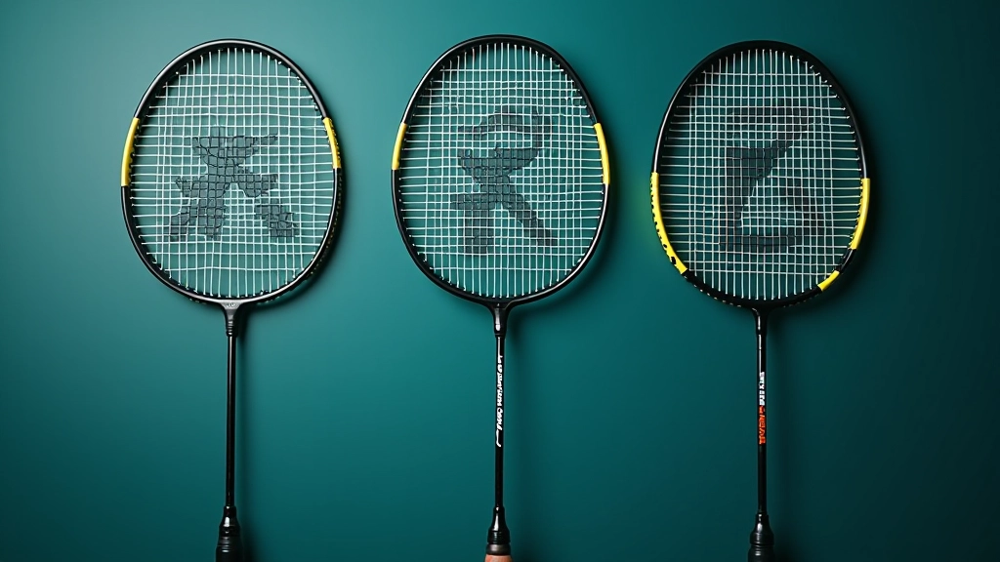
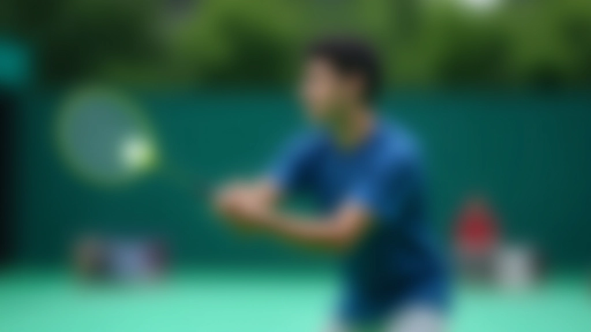

اختيار قوة الشد المناسبة لمستواك
دليل عملي يساعدك على تحديد قوة الشد المثالية بناءً على مستوى لعبك والمضرب الذي تستخدمه.

كيف يحسّن الضبط الصحيح للشد والقبضة من قوتك ودقتك وتحكمك في كل ضربة
الكثيرون يركزون على تقنية الحركة فقط، لكنهم يغفلون عن شيء أساسي: شد الأوتار والقبضة هما أساس كل شيء. عندما تكون القبضة ضعيفة أو الشد غير متوازن، ستشعر الفرق فوراً — الضربات تصبح أقل قوة، والتحكم ينخفض، والأخطاء تزداد.
هذا الدليل يشرح كيف يؤثر كل منهما على لعبتك بطرق محددة وملموسة. ستفهم لماذا يختار اللاعبون المحترفون شد معين، وكيف يختلف الإمساك بالمضرب بين نوع اللعبة والموقف.
يتراوح بين 20-30 رطل للاعبين الهواة و25-32 للمحترفين
الأمامية والخلفية والمتوازنة — لكل منها استخدامها الخاص
يؤثران على سرعة الكرة والدقة والتحكم في الإيقاع
شد الأوتار ليس رقماً عشوائياً — إنه العامل الذي يتحكم في كم الطاقة تنقل الأوتار إلى الكرة. عندما تكون الأوتار مشدودة جداً (أكثر من 32 رطل)، تصبح قاسية جداً وتفقد المرونة. النتيجة: الكرة ترتد بسرعة عالية لكن بدون تحكم.
من الناحية الأخرى، الشد الضعيف (أقل من 20 رطل) يعني أن الأوتار تتحرك أكثر من اللازم. تخسر القوة والاستقرار. الكثير من اللاعبين الهواة يختارون شد متوسط حول 24-26 رطل — هذا يعطي توازناً بين القوة والتحكم.
الملاحظة الذكية: اللاعبون الأسرع يختارون شد أعلى لأنهم يريدون ردود فعل أسرع. اللاعبون الذين يركزون على الدقة يفضلون شد أقل قليلاً للتحكم الأفضل.


القبضة ليست فقط عن مسك المضرب — إنها عن نقل القوة من ذراعك إلى الكرة بكفاءة. هناك ثلاث قبضات أساسية يجب أن تتقنها:
تُستخدم لضربات الأمام والقوة. الإبهام والسبابة يشكلان حرف V صغير على جانب المضرب.
للدفاع والضربات من الخلف. تدير يدك قليلاً لتشعر بالراحة والسيطرة.
موضع بين الأمام والخلف. تسمح بالحركة السريعة والمرونة بين الضربات.
الشد والقبضة لا يعملان بمعزل عن بعضهما. عندما تتقن القبضة الصحيحة مع شد مناسب، تحصل على توازن حقيقي. مثلاً، إذا كنت تستخدم قبضة أمامية قوية مع شد 28 رطل، ستشعر بالكرة أفضل وتتحكم فيها أكثر من لاعب يستخدم نفس الشد لكن قبضته ضعيفة.
اللاعبون المحترفون يغيّرون القبضة قليلاً بين الضربات — ليس بشكل درامي، بل بدقة. هذا يعطيهم المرونة للتكيف مع سرعة الكرة والزوايا المختلفة.
ركز على القبضة أولاً. الشد يمكنك أن تجربه بعدما تتقن الإمساك الأساسي.
جرب شد 24-26 رطل مع قبضة متوازنة. اشعر بالفرق عندما تغير القبضة قليلاً.
جرب شد أعلى (28-30) مع تغييرات دقيقة في القبضة لكل نوع ضربة.


عندما تجمع الشد الصحيح مع القبضة المثالية، ترى تأثيرات مباشرة وقابلة للقياس. السرعة تزداد — الكرة تسير أسرع لأن الأوتار توصل الطاقة بكفاءة. الدقة تتحسن — تشعر بمزيد من التحكم لأن القبضة تمنع الاهتزاز غير الضروري.
أيضاً، التعب يقل. عندما تمسك المضرب بشكل صحيح، لا تحتاج إلى عضلات إضافية للتعويض. معظم اللاعبين يلاحظون أنهم يمكنهم اللعب لمدة أطول دون إرهاق اليد أو الذراع بعد 4-6 أسابيع من تصحيح القبضة.
الشد والقبضة ليسا معقدين كما قد يبدوان. الشيء الأساسي: جرب شد متوسط حول 24-26 رطل وركز على إتقان القبضة الأمامية أولاً. بعد أسبوعين من التدريب المنتظم، ستشعر بالفرق. الكرة ستشعر بأنها تحت سيطرتك أكثر، والضربات ستكون أكثر قوة ودقة.
لا تقلق من التجربة والخطأ — حتى اللاعبون المحترفون يعدّلون شدهم حسب الطقس والمضرب والمنافس. الشيء المهم هو أن تفهم كيف يؤثران على لعبتك حتى تتمكن من التحكم فيهما بدلاً من أن تتحكما بك.
اكتشف المزيد من الأدلةهذا الدليل مخصص لأغراض تعليمية فقط. المعلومات المقدمة هنا بناءً على ممارسات عامة في لعبة الريشة الطائرة. كل لاعب مختلف، وما ينجح لشخص قد لا ينجح لآخر. نوصي باستشارة مدرب متخصص أو فني معدات محترف قبل إجراء تغييرات كبيرة على شد مضربك أو تقنيتك. استخدم هذه المعلومات على مسؤوليتك الخاصة.

فريق المحتوى التحريري
أعده فريق ريشة الاحتراف التحريري، متخصص في تقديم إرشادات عملية وسهلة المتابعة.
دليل عملي يساعدك على تحديد قوة الشد المثالية بناءً على مستوى لعبك والمضرب الذي تستخدمه.

شرح تفصيلي لأنواع القبضة المختلفة وكيفية تطبيقها. تعلم الفرق بين القبضة الأمامية والخلفية.

نصائح عملية لفحص أوتار مضربك والعناية بها. تعرّف على الأدوات البسيطة التي تحتاجها.